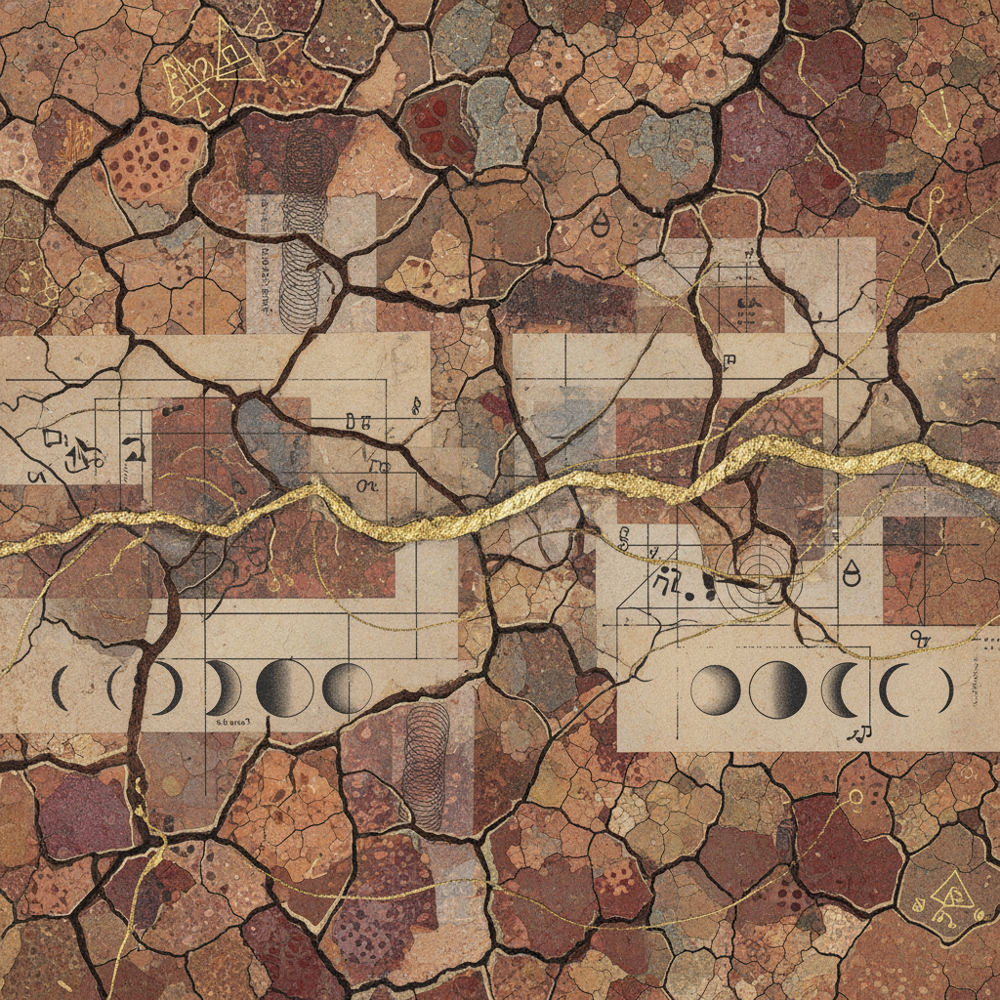

Depth Rooting
in Earth
An archetypal journey from the transformative fires of the Scorpio Full Moon toward the tangible grounding of the Taurus New Moon.
Archival Metadata
14-Day Protocol Summary
Submersion Phase
Identify the Scorpio shadow artifacts. What power dynamics are currently being composted? Excavate the roots before the grounding begins.

Alchemy of Voice
The transition from the deep pelvic bowl (Scorpio) to the throat center (Taurus). Speak the hidden truths to solidify them into physical reality.
- Vocal Toning Protocols
- Root Lock Maintenance
Solidification
The New Moon in Taurus arrival. Tangible embodiment. Physical rituals involving clay, soil, and nutrient-dense intake.
Somatic Check-In
Observe the physical vessel as it bridges these two signs. Record the sensations in the marginalia of your consciousness.
Observation of Power
"Power is not a static possession but a kinetic transition. In the Scorpio phase, power is the ability to destroy. In the Taurus phase, power is the ability to sustain."
Prompt 19.A
How has the 'shedding' of the Full Moon created fertile soil for the New Moon's planting? Be specific about the loss and the gain.
Department of Somatic Archaeology
The Biomechanics of Stability
Analyze the relationship between pelvic floor engagement and the freedom of the vocal folds. Conduct a 48-hour longitudinal study on your own tonal variations.
Review MethodologyThe Myth of the Minotaur
Explore the Labyrinth as a metaphor for the Scorpio descent and the Bull (Taurus) as the physical manifestation of that which is hidden at the center.
Cross-Reference Volume IIMineral Transmutation
Investigate the grounding properties of Copper (Venus/Taurus) versus Iron (Mars/Scorpio). How do these metals interact within the cellular fluid?
Laboratory Notes